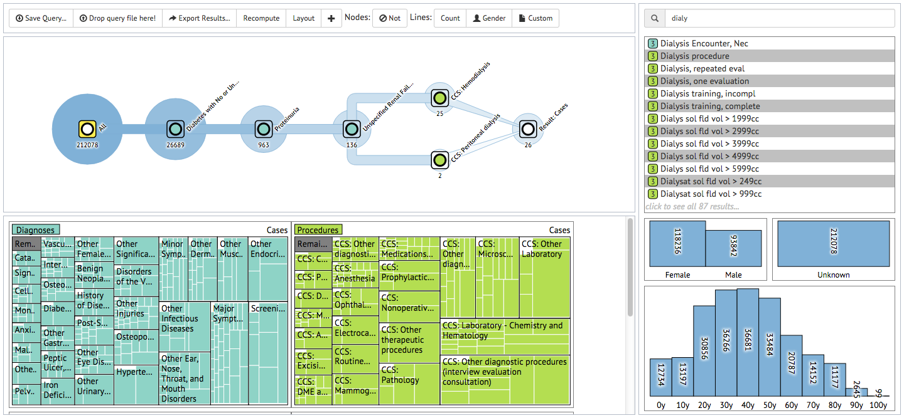

Many researchers across diverse disciplines aim to analyze the behavior of cohorts whose behaviors are recorded in large event databases. However, extracting cohorts from databases is a difficult yet important step, often overlooked in many analytical solutions. This is especially true when researchers wish to restrict their cohorts to exhibit a particular temporal pattern of interest. In order to fill this gap, we designed COQUITO, a visual interface that assists users defining cohorts with temporal constraints. COQUITO was designed to be comprehensible to domain experts with no preknowledge of database queries and also to encourage exploration. We then demonstrate the utility of COQUITO via two case studies, involving medical and social media researchers.
@article{coquito15,
author={Krause, Josua and Perer, Adam and Stavropoulos, Harry},
journal={Visualization and Computer Graphics, {IEEE} Transactions on},
title={Supporting Iterative Cohort Construction with Visual Temporal Queries},
year={2015},
month={Oct}
}